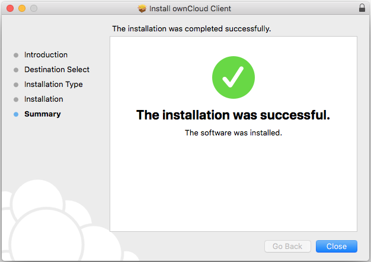
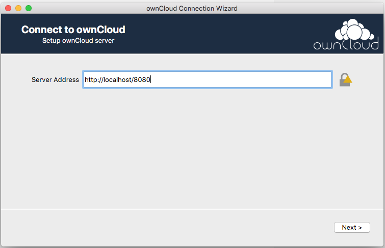
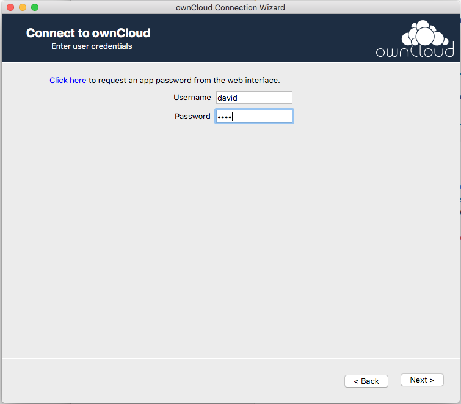
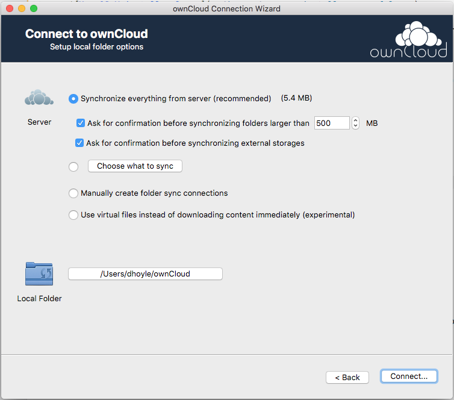
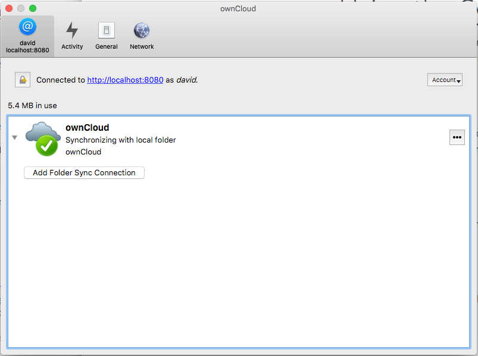
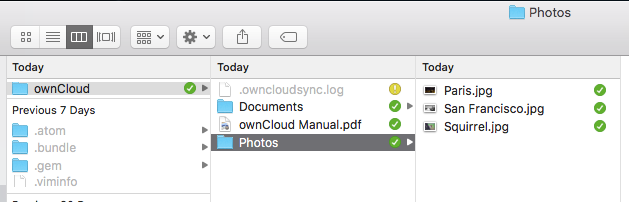

Connecting to ownCloud Using Desktop and Mobile Clients
Connecting to ownCloud Using Desktop Clients
Mac OS X
-
Download the latest production version of the Mac OS X desktop client from the ownCloud Server Downloads page.
-
Open the downloaded .pkg file to launch the ownCloud client installer, then click through the installer steps. When the installation has completed successfully, click Close.

-
In the Applications folder, open owncloud. The ownCloud connection wizard appears. Enter the ownCloud server address in the Server Address box, then click Next.

-
On the next screen, enter your ownCloud user name and password, then click Next.

-
On the next screen, accept the default local folder options, then click Connect.

-
When the connection wizard successfully connects to the ownCloud server, the synchronization client appears.

-
You can now use Finder to browse to the local ownCloud folder you specified in the connection wizard. This folder is synchronized with the ownCloud server.

-
For more information, see Using the Synchronization Client.
Windows
See Installing the Desktop Synchronization Client for instructions on installing and connecting the ownCloud desktop client for Microsoft Windows.
Connecting to ownCloud Using Mobile Clients
The following resources provide information about ownCloud synchronization clients for iOS and Android devices.